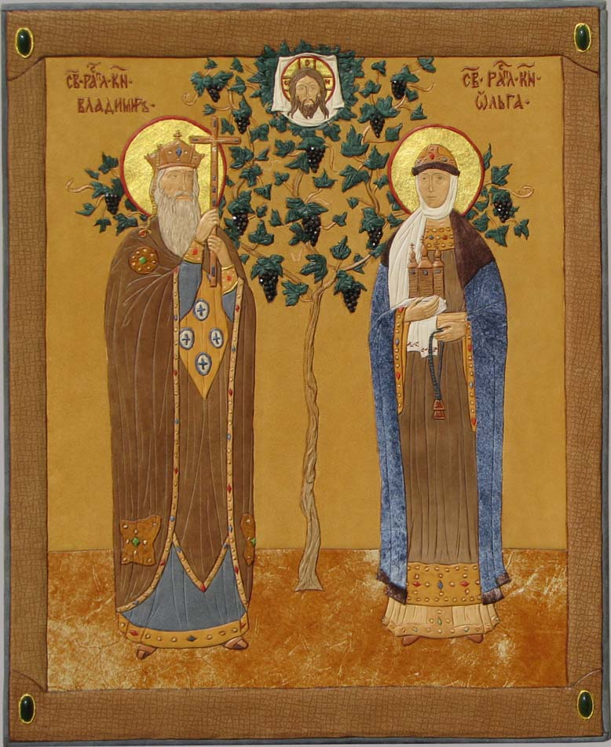

|  | |
| .Святые Равноапостольные Княгиня Ольга и Князь Владимир Кожа, гранат, нефрит, сусальное золото. 64 см х 52 см. |
|
| Orthodox Princess St. Olga and Prince St. Vladimir. Leather, garnet, nephrite, tinsel, gold leaf. 64 cm x 52 cm. |
|
| Святі Рівноапостольні Княгиня Ольга и Князь Володимир. Шкіра, гранат, нефрит, сусальне золото. 64 см x 52 см. |
|